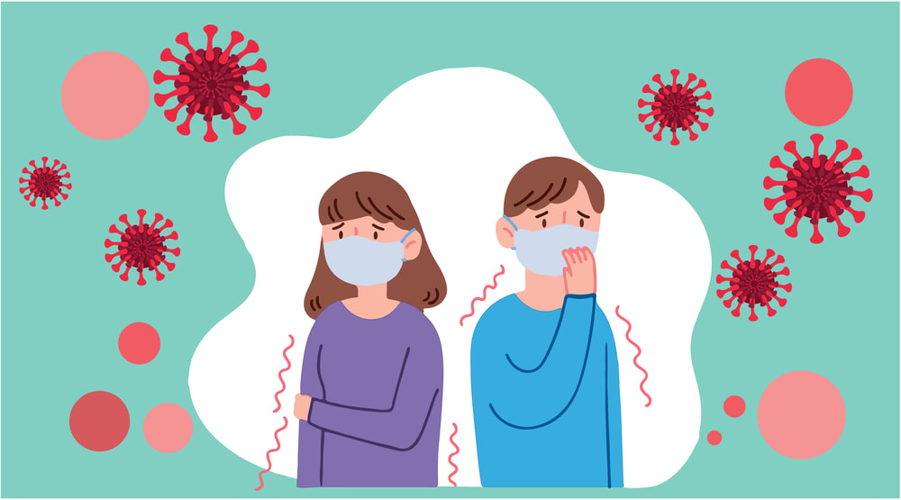
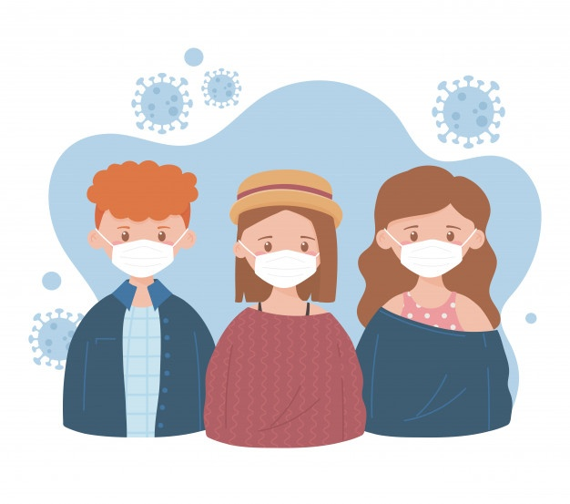

Pengertian

Severe acute respiratory syndrome coronavirus 2 (SARS-CoV-2) yang lebih dikenal dengan nama virus Corona adalah jenis virus yang bisa menyebabkan gangguan ringan pada sistem pernapasan, infeksi paru-paru yang berat, hingga kematian.
Infeksi virus Corona disebut COVID-19 (Corona Virus Disease 2019) dan pertama kali ditemukan di kota Wuhan, China pada akhir Desember 2019. Virus ini menular dengan sangat cepat dan telah menyebar ke hampir semua negara, termasuk Indonesia, hanya dalam waktu beberapa bulan.
Virus ini menular melalui percikan dahak (droplet) dari saluran pernapasan, misalnya ketika berada di ruang tertutup yang ramai dengan sirkulasi udara yang kurang baik atau kontak langsung dengan droplet.
Gejala Virus Corona (COVID-19)
Gejala awal infeksi virus Corona atau COVID-19 bisa menyerupai gejala flu, yaitu demam, pilek, batuk kering, sakit tenggorokan, dan sakit kepala. Setelah itu, gejala dapat hilang dan sembuh atau malah memberat. Penderita dengan gejala yang berat bisa mengalami demam tinggi, batuk berdahak bahkan berdarah, sesak napas, dan nyeri dada. Gejala-gejala tersebut muncul ketika tubuh bereaksi melawan virus Corona.
Secara umum, ada 3 gejala umum yang bisa menandakan seseorang terinfeksi virus Corona, yaitu:
- Demam (suhu tubuh di atas 38 derajat Celsius)
- Batuk kering
- Sesak nafas
Ada beberapa gejala lain yang juga bisa muncul pada infeksi virus Corona meskipun lebih jarang, yaitu:
- Diare
- Sakit kepala
- Konjungtivitis
- Hilang kemampuan mengecap rasa
- Hilang kemampuan mencium bau
- Ruam di kulit
Gejala-gejala COVID-19 ini umumnya muncul dalam waktu 2 hari sampai 2 minggu setelah penderita terpapar virus Corona. Sebagian pasien yang terinfeksi virus Corona bisa mengalami penurunan oksigen tanpa adanya gejala apapun. Kondisi ini disebut happy hypoxia.
Penyebab Virus Corona (COVID-19)

Infeksi virus Corona atau COVID-19 disebabkan oleh coronavirus, yaitu kelompok virus yang menginfeksi sistem pernapasan. Pada sebagian besar kasus, coronavirus hanya menyebabkan infeksi pernapasan ringan sampai sedang, seperti flu. Akan tetapi, virus ini juga bisa menyebabkan infeksi pernapasan berat, seperti pneumonia, Middle-East Respiratory Syndrome (MERS) dan Severe Acute Respiratory Syndrome (SARS).
Seseorang dapat tertular COVID-19 melalui berbagai cara, yaitu:
- Tidak sengaja menghirup percikan ludah (droplet) yang keluar saat penderita COVID-19 batuk atau bersin
- Memegang mulut atau hidung tanpa mencuci tangan terlebih dulu setelah menyentuh benda yang terkena cipratan ludah penderita COVID-19
- Kontak jarak dekat dengan penderita COVID-19
Virus Corona dapat menginfeksi siapa saja, tetapi efeknya akan lebih berbahaya atau bahkan fatal bila terjadi pada orang lanjut usia, ibu hamil, orang yang memiliki penyakit tertentu, perokok, atau orang yang daya tahan tubuhnya lemah, misalnya pada penderita kanker.
Pengobatan Virus Corona (COVID-19)

Belum ada obat yang benar-benar efektif untuk mengatasi infeksi virus Corona atau COVID-19. Pilihan pengobatan akan disesuaikan dengan kondisi pasien dan tingkat keparahannya. Beberapa pasien dengan gejala ringan atau tanpa gejala akan di sarankan untuk melakukan protokol isolasi mandiri di rumah sambil tetap melakukan langkah pencegahan penyebaran infeksi virus Corona.
Selain itu, dokter juga bisa memberikan beberapa beberapa langkah untuk meredakan gejalanya dan mencegah penyebaran virus corona, yaitu:
- Merujuk penderita COVID-19 yang berat untuk menjalani perawatan dan karatina di rumah sakit rujukan
- Memberikan obat pereda demam dan nyeri yang aman dan sesuai kondisi penderita
- Menganjurkan penderita COVID-19 untuk melakukan isolasi mandiri dan istirahat yang cukup
- Menganjurkan penderita COVID-19 untuk banyak minum air putih untuk menjaga kadar cairan tubuh
Pencegahan Virus Corona (COVID-19)

Saat ini, Indonesia sedang melakukan vaksinasi COVID-19 secara berkala ke masyarakat Indonesia. Meskipun vaksinasi sudah mulai di jalankan, cara pencegahan yang terbaik adalah dengan menghindari faktor-faktor yang bisa menyebabkan Anda terinfeksi virus ini, yaitu:
- Terapkan physical distancing, yaitu menjaga jarak minimal 1 meter dari orang lain.
- Gunakan masker saat beraktivitas di tempat umum atau keramaian.
- Rutin mencuci tangan dengan air dan sabun atau hand sanitizer yang mengandung alkohol minimal 60%.
- Jangan menyentuh mata, mulut, dan hidung sebelum mencuci tangan.
- Meningkatkan daya tahan tubuh dengan pola hidup sehat, seperti mengonsumsi makanan bergizi, berolahraga secara rutin, beristirahat yang cukup, dan mencegah stres.
- Hindari kontak dengan penderita COVID-19, orang yang dicurigai positif terinfeksi virus Corona, atau orang yang sedang sakit demam, batuk, atau pilek.
- Jaga kebersihan benda yang sering disentuh dan kebersihan lingkungan.
Untuk orang yang diduga terkena COVID-19, ada beberapa langkah yang bisa dilakukan agar tidak menularkan virus Corona ke orang lain, yaitu:
- Lakukan isolasi mandiri dengan cara tinggal terpisah dari orang lain untuk sementara waktu. Bila tidak memungkinkan, gunakan kamar tidur dan kamar mandi yang berbeda dengan yang digunakan orang lain.
- Jangan keluar rumah, kecuali untuk mendapatkan pengobatan.
- Bila ingin ke rumah sakit saat gejala bertambah berat, sebaiknya hubungi dulu pihak rumah sakit untuk menjemput.
- Larang orang lain untuk mengunjungi atau menjenguk Anda sampai Anda benar-benar sembuh.
- Sebisa mungkin jangan melakukan pertemuan dengan orang yang sedang sedang sakit.
- Hindari berbagi penggunaan alat makan dan minum, alat mandi, serta perlengkapan tidur dengan orang lain.
- Pakai masker dan sarung tangan bila sedang berada di tempat umum atau sedang bersama orang lain.
- Gunakan tisu untuk menutup mulut dan hidung bila batuk atau bersin, lalu segera buang tisu ke tempat sampah.
Kondisi-kondisi yang memerlukan penanganan langsung oleh dokter di rumah sakit, seperti melahirkan, operasi, cuci darah, atau vaksinasi anak, perlu ditangani secara berbeda dengan beberapa penyesuaian selama pandemi COVID-19. Tujuannya adalah untuk mencegah penularan virus Corona selama Anda berada di rumah sakit. Konsultasikan dengan dokter mengenai tindakan terbaik yang perlu dilakukan.